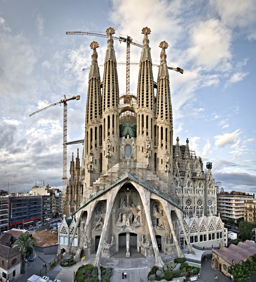

Casa Batlló is a renowned building located in the center of Barcelona and is one of
Antoni Gaudí’s masterpieces. The local name for the building is Casa dels Ossos (House
of Bones), as it has a visceral, skeletal organic quality. The interior resembles the
deep sea, where he got the inspiration for the building from.
Source: this text uses content retrieved from the
Wikipedia.
Opening Hours: mon-sun 09:00-21:00
Entry Price: € 24,50 (adults); € 21,50 (concessions); free for children under 7.
The Hospital de la Santa Creu i Sant Pau was a fully functioning hospital until June
2009, before becoming a museum and cultural center. It's a remarkable catalan modernist
building, with a lot of Barcelona's history
explained through its rooms and famous underground tunnels open to the visitors.
Entry Price: € 14 (adults); € 9,80 (concessions); free for children under 12,
teachers and other groups.
La Sagrada Familia

Passion facade of the temple
(Source: ArchDaily)
The Basilica and Expiatory Church of the Holy Family is the largest
unfinished
church in the world and it was designed by Gaudím who devoted the remainder of his life
to the project. By the time of his death, in 1926, less than a quarter of the project was
complete. This remarkable building has a compelling history and it's a unforgettable visit.
In front of the astonishing National Museum of Catalan visual art (MNAC), you can find the
Magic Fountain of Montjuïc, which, like most of the surrounding developments, was
constructed for the 1929 Barcelona International Exposition. In the 1980s, music was
incorporated with the light show and the fountain.
Source: this text uses content retrieved from the
Wikipedia.